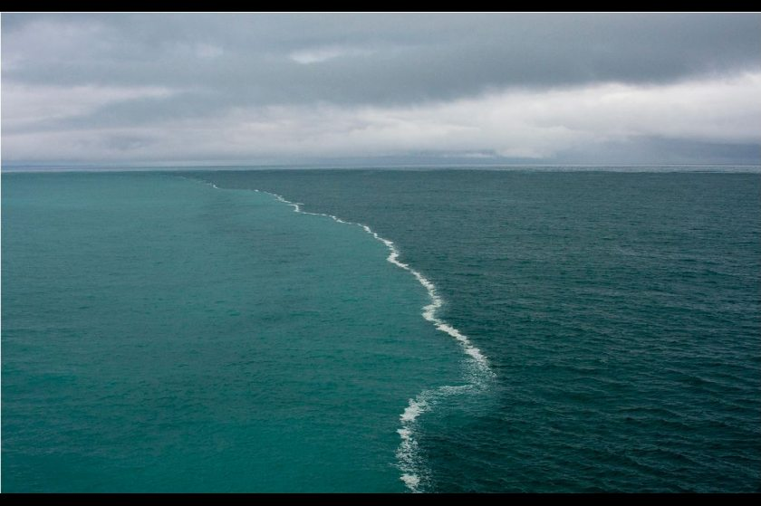

Testing • Oct 03, 2014
This is my first blog ! keep visiting to stay tuned B-)
Political• Oct 08, 2014
So, it is now more then four month of our new "Modi government" and things seem to go in a better direction. As the last Loksabha election not only changed the political scenario of the country but shook up various political trends that were being followed from the time of "Independence". The politics of reserved vote banks on the basis of caste and religion was wiped out and the real issues like development and inflation were raised. Number of voters went up by about 13 crores from 41.7 crore in 2009 to 55.38 crore in 2014 with the percentage rise of with respect to total voters by more then seven percentage. "Full participation in government and society has been a basic right of the country symbolizing the full citizenship and equal protection of al." ~Charles B. Rangel
While looking and analysing all the facts that the higher public participation of people in choosing their governing body is not only a human right but is also in nation's favour, I felt sad for not casting my vote ! so do i feel sad for all the aware people who reside outside their constituency. There is a large section of highly qualified people who migrate to a different place either for education or work could not cast their votes. The votes of these qualified and educated people may help a lot in choosing a better government.
There is an existing provision of getting a voting right in your migrated constituency. But being a student and residing within my college campus I am not really aware of what local people need here, I am not able to make a fair decision of choosing my candidate here. This thought took my imagination to the situation where I could vote for my home constituency from Hyderabad itself. Why can't we have a system that provides this right. It will not only help in choosing a better government but it will also let a huge section of people like me to contribute for choosing better Ideology. A highly secured system could be built by providing or using the unique id for each constituency and providing the voter right to vote for his/her constituency as per their voter identifications.
Science• Oct 11, 2014

A picture from the Gulf of Alaska that has been making the rounds on the Internet for the last few years, shows a strange natural phenomenon that occurs when heavy, sediment-laden water from glacial valleys and rivers pours into the open ocean. There in the gulf, the two types of water run into each other, a light, almost electric blue merging with a darker slate-blue.
Informally dubbed “the place where two oceans meet,” the explanation for the photo is a simple one, though there are many misconceptions about it, including that catchy title. In particular on popular link-sharing website Reddit, where users have on multiple occasions erroneously attributed the photo’s location as “Where the Baltic and North Sea meet” and the two types of water as being completely incapable of ever mixing, instead perpetually butting against each other like a boundary on a map.